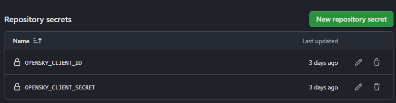

6 Deploying via GitHub Actions
We’re at the last part. We laugh, we cried, we made some friends along the way - okay, we didn’t do any of that. We did make a lot of tables, though. Now all that’s left is sharing them with the world.
6.1 Putting into Quarto and Styling
Before we talk about GitHub pages, you’re going to want to put the pieces we’ve assembled in the previous chapters into a Quarto document - specifically, the web development pieces that came out of Section 5.1 and Section 5.3. I’ve got an example for you to use here.
Another interject: I neglected to share some styling things to spruce up your dashboard before deployment. I mentioned SCSS rules in Section 5.1, but here’s the full SCSS you might want to have:
$navbar-bg: black;
$navbar-fg: white;
/*-- scss:rules --*/
// CSS rules for styling go here
// Scale pop-up for different displays
body .maplibregl-popup {
max-width: 80vw !important; // Default for mobile and small screens (<901px)
max-height: 70vh !important;
z-index: 1200;
}
// Rule for displays between 901px and 1351px
@media screen and (min-width: 901px) and (max-width: 1351px) {
body .maplibregl-popup {
max-width: 60vw !important; // Larger on "tablet" and medium desktop displays
}
}
// Rule for large displays (>1351px)
@media screen and (min-width: 1352px) {
body .maplibregl-popup {
max-width: 40vw !important; // Smaller on large desktop displays
}
}
body .maplibregl-popup-content {
overflow-x: auto !important;
overflow-y: auto !important;
}Additionally, you might want to use a _brand.yml file mimicking your airline of choice. Here’s mine for United:
meta:
name: United Airlines
link: https://www.united.com
logo:
images:
united-logo:
path: "https://www.united.com/2500e4e62233fbfe8ac6.unitedLogoNew.svg"
alt: "United Airlines"
small: united-logo
medium: united-logo
large: united-logo
color:
palette:
blue: "#1414D2"
primary: blue
secondary: whiteFinally, you’re probably going to want a _quarto.yml file for your project. I’ll get to that below.
6.2 Setting up GitHub Pages and GitHub Actions
I guess it’s worth talking about the strategies of deployment quickly. Side note that Hadley Wickham has a book-in-progress on this and you should probably read it, because what I’m about to give you is the cliff-notes version of a workshop based on said book.
Basically, the first step we should think about when we think through deployment is longevity - i.e., managing package versions. We’ve got three options for this:
- YOLO: just send it up on GitHub or Posit Connect or whatever with whatever pak pulls
- Pack and ship: use rsconnect::manifest(), which works really well with Posit tools and is really elegant and frankly a really good plug for Posit solutions.
- Freeze it: use renv to lock everything.
We’re going to use YOLO, because in the workshop it had a cool picture of a guy hang gliding but also because the packages we use are stable enough for present purposes. Moreover, we are also constantly building our app, and pak/GitHub will package lock our builds at the time of compilation. Moreover moreover, it fits with our current approach of using CDNs and connections to online resources whenever we can. I don’t recommend this necessarily if you want an app that you’re sure won’t suffer from a breaking change. The converse of that is your app won’t benefit from improvements/new functionality introduced into packages that take effect natively. So your mileage will vary here.
To continuously integrate and deploy (CI/CD!) our app, we’re going to need a few things:
- GitHub Pages
- A GitHub action to render and deploy our index.qmd to pages
- A GitHub action to pull the United fleet Google Sheet every so often in case United takes new deliveries (or some planes go inactive)
6.2.1 GitHub Pages
I’m assuming you have GitHub initialized. If you don’t, start with this in the console while in your project directory:
usethis::use_github()
Before you go any further, remember when we introduced some secrets in Section 3.1.3? Yeah, we’re probably going to want to tell GitHub about those. It’s okay, I don’t think GitHub is interested in telling everyone your secrets.1 Navigate to your repository, then go to “Settings”, and go to “Secrets and Variables.” You’re going to want to add two repository secrets, one called OPENSKY_CLIENT_ID and the other OPENSKY_CLIENT_SECRET, corresponding to your ID and SECRET in your credentials.json/.Renviron from earlier.

And before you go any further again, you’re going to likely want a _quarto.yml file for your project, even if it’s just a standalone page/dashboard. You don’t need this; you’re able to deploy individual sites without a _quarto.yml file. Speaking from experience, though, the _quarto.yml file makes your life a bit easier because it enables you to use the Quarto publish workflow:
- name: Render and Publish
uses: quarto-dev/quarto-actions/publish@v2
with:
target: gh-pages
env:
OPENSKY_CLIENT_ID: ${{ secrets.OPENSKY_CLIENT_ID }}
OPENSKY_CLIENT_SECRET: ${{ secrets.OPENSKY_CLIENT_SECRET }}If you’re not sure how to set up a _quarto.yaml, in this case it can be as simple as this:
project:
type: website
website:
title: "Posit Table Contest"
favicon: https://www.united.com/2500e4e62233fbfe8ac6.unitedLogoNew.svgYou can then set up pages:
usethis::use_github_pages()
… and run this command in the terminal:
quarto publish gh-pagesYour Quarto doc will render for its initial deployment to pages. If you’re overly eager like me, you might’ve changed your “Pages” setting to “Deploy from GitHub Actions” - change it back to “Deploy from a branch” if that’s the case, and make sure it’s deploying from “gh-pages” (unless you changed the defaults set by use_github_pages()).
After the initial render, you should have your first deployment! Hooray! But how do we get it to continuously deploy? Enter GitHub actions.
I’ve set up an action file called render.yml, which looks something like this:
name: Pull flights, render, and publish
on:
workflow_dispatch:
schedule:
- cron: '*/30 * * * *'
permissions:
contents: write
jobs:
render:
runs-on: ubuntu-latest
steps:
# Checkout this repo
- uses: actions/checkout@v4
# Install R
- uses: r-lib/actions/setup-r@v2
with:
use-public-rspm: true
# Install R packages from files/DESCRIPTION
- uses: r-lib/actions/setup-r-dependencies@v2
# Install quarto
- uses: quarto-dev/quarto-actions/setup@v2
- name: Render and Publish
uses: quarto-dev/quarto-actions/publish@v2
with:
target: gh-pages
env:
OPENSKY_CLIENT_ID: ${{ secrets.OPENSKY_CLIENT_ID }}
OPENSKY_CLIENT_SECRET: ${{ secrets.OPENSKY_CLIENT_SECRET }}And the anatomy of this action is as such:
name: Pull flights, render, and publish
on:
workflow_dispatch:
schedule:
- cron: '*/30 * * * *'
permissions:
contents: writename: a name for the action that shows up in GitHub
on: creates the conditions under which the action runs: - The workflow activates every 30 minutes (you can use crontab.guru for help writing cron jobs) - The workflow activates on a workflow dispatch button which appears in GitHub under the “Actions” section of your repository - Gives the action write permissions, which allows it to write the changes to GitHub pages
jobs:
render:
runs-on: ubuntu-latest
steps:
# Checkout this repo
- uses: actions/checkout@v4
# Install R
- uses: r-lib/actions/setup-r@v2
with:
use-public-rspm: true
# Install R packages from files/DESCRIPTION
- uses: r-lib/actions/setup-r-dependencies@v2
# Install quarto
- uses: quarto-dev/quarto-actions/setup@v2
- name: Render and Publish
uses: quarto-dev/quarto-actions/publish@v2
with:
target: gh-pages
env:
OPENSKY_CLIENT_ID: ${{ secrets.OPENSKY_CLIENT_ID }}
OPENSKY_CLIENT_SECRET: ${{ secrets.OPENSKY_CLIENT_SECRET }}jobs: actually specifies what’s going to take place: - The “runner”, aka, the Microsoft Azure Ubuntu Linux container running the job, will grab your repo and start working on it - The runner will install R - The runner will then set up dependencies (packages) based on what it detects in your scripts - The runner will set up Quarto - Finally, the runner will render your Quarto document, and publish to GitHub pages, because you have specified:
with:
target: gh-pagesAdditionally, your runner will actually be able to render your document because you’ve supplied:
env:
OPENSKY_CLIENT_ID: ${{ secrets.OPENSKY_CLIENT_ID }}
OPENSKY_CLIENT_SECRET: ${{ secrets.OPENSKY_CLIENT_SECRET }}6.2.1.1 Troubleshooting
Chances are, you’re going to run into some obstacles. I hope that providing you with the .yml will mitigate this somewhat, but here’s some general notes about failed deployments using this code:
- Some failed deployments are normal. The solution proposed in Section 2.1.1 relies, partly, on chance, in the sense that you’ll actually pull live aircraft. You may very well pull a segment of aircraft that are all sitting on the ground in a given moment. In this case, the Quarto script fails on purpose because there’s nothing to visualize. And it’s entirely possible that you could have long stints where you pull nothing, just because you’re pulling the wrong aircraft on the network. The best solution here is just to take a larger cross section of aircraft, perhaps trading off on the refresh period (i.e., 30/40 aircraft every hour, on the hour).
- You rotated your credentials and forgot to update them (me).
- You haven’t successfully rendered the Quarto page at least once locally with
usethis::use_gh_pages()
The best advice for troubleshooting is to check the logs by going to your repo, going to “Actions,” and clicking on a failed deployment. Here’s an example:
Here, tbl$destination_plausible is missing, likely because no aircraft were returned from our API functions. Similar errors include errors thrown by st_as_sf() about the absence of geometries and left_join() about a lack of columns to join, likely due to a missing table.
6.2.2 Updating Fleet Info
The last piece is automatically refreshing the fleet info from Google Sheets. We’ll use a separate actions .yml file for that called update_ua_fleet.yml.
name: Check for changes to the United mainline fleet
on:
workflow_dispatch:
schedule:
- cron: '5 12 * * *'
permissions:
contents: write
jobs:
render:
runs-on: ubuntu-latest
steps:
# Checkout this repo
- uses: actions/checkout@v4
# Install R
- uses: r-lib/actions/setup-r@v2
with:
use-public-rspm: true
# Install R packages from files/DESCRIPTION
- uses: r-lib/actions/setup-r-dependencies@v2
# Execute the script
- name: Query changes to United fleet and update active registrations
run: Rscript rebuild_fleet_info.R
# Commit changes to csv back to the repo
- uses: stefanzweifel/git-auto-commit-action@v5Let’s walk through this one like the last:
name: Check for changes to the United mainline fleet
on:
workflow_dispatch:
schedule:
- cron: '5 12 * * *'
permissions:
contents: writename: sets the name we see in GitHub for this action.
on: does the following:
- lets us trigger the action using the workflow dispatch button in actions
- runs this job at 12:05 UTC daily
permissions: enables the runner to write; specifically, it’ll write "data/united_full_fleet_info.csv" and ""data/compatible_registrations.csv""
jobs:
render:
runs-on: ubuntu-latest
steps:
# Checkout this repo
- uses: actions/checkout@v4
# Install R
- uses: r-lib/actions/setup-r@v2
with:
use-public-rspm: true
# Install R packages from files/DESCRIPTION
- uses: r-lib/actions/setup-r-dependencies@v2
# Execute the script
- name: Query changes to United fleet and update active registrations
run: Rscript rebuild_fleet_info.R
# Commit changes to csv back to the repo
- uses: stefanzweifel/git-auto-commit-action@v5jobs: everything’s the same here with the exception of the last two:
run: Rscript rebuild_fleet_info.Rwill run our R scriptuses: stefanzweifel/git-auto-commit-action@v5will commit the changes the runner makes, i.e., writing the updated CSVs, to the repo
… and that should be all you need to know on the deployment side! You can create these actions by going to the Actions tab under your repo.
In fact, there are some limited things GitHub does to prevent you from accidentally leaking a secret, but if you’re really determined, then GitHub’s not going to be able to stop you.↩︎